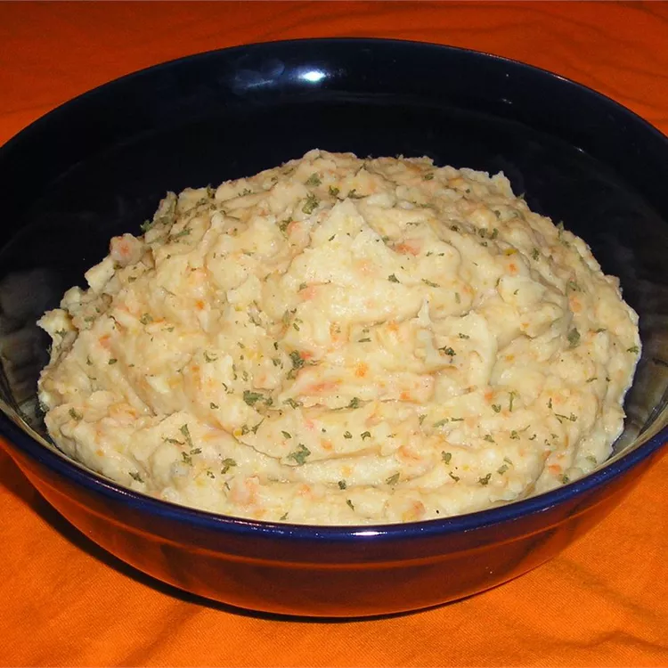

Vegetable Whip
This is an old French Canadian recipe I have been making for years. Even people who don't like turnip will like this, since the addition of the other vegetables blend in and hide the normally strong turnip taste. Depending on your taste, you can experiment with the relative amounts of the vegetables, eg: increase the onion or potatoes, decrease the turnip.
Ingredients
- 1 turnip, peeled and diced
- 4 carrots - peeled and diced
- 1 large onion, chopped
- 6 medium potatoes - peeled and cubed
- 1/4 cup butter
- 1/2 cup milk
- salt and pepper to taste
Directions
- Place the turnip, carrots, onion, and potatoes in a pot with water to cover. Bring to a boil over medium-high heat, and cook until fork-tender.
- Drain the water from the vegetables, and stir in the butter until melted. Beat with an electric mixer, adding milk gradually, until light and fluffy. Do not beat for too long, just until smooth. Season to taste with salt and pepper, and serve hot.
Home